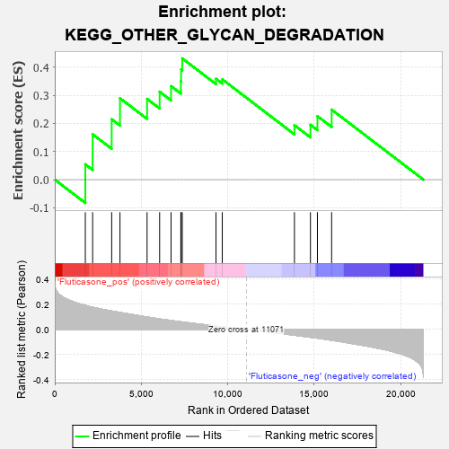
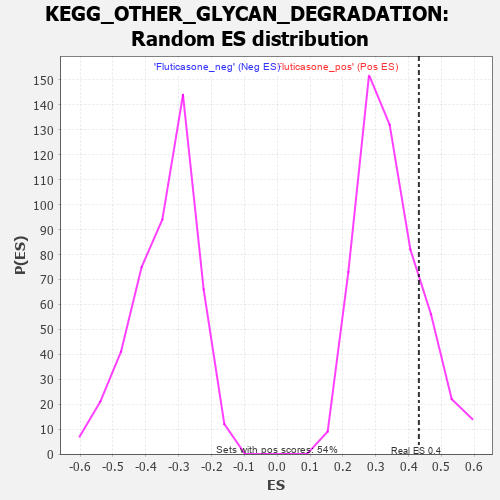

| | | Dataset | GSEA_expr_Flu.GSEA_timepoint.cls#Fluticasone |
| Phenotype | GSEA_timepoint.cls#Fluticasone |
| Upregulated in class | Fluticasone_pos |
| GeneSet | KEGG_OTHER_GLYCAN_DEGRADATION |
| Enrichment Score (ES) | 0.4313045 |
| Normalized Enrichment Score (NES) | 1.2641983 |
| Nominal p-value | 0.18148148 |
| FDR q-value | 1.0 |
| FWER p-Value | 0.921 |
Table: GSEA Results Summary

Fig 1: Enrichment plot: KEGG_OTHER_GLYCAN_DEGRADATION
Profile of the Running ES Score & Positions of GeneSet Members on the Rank Ordered List
| PROBE | DESCRIPTION
(from dataset) | GENE SYMBOL | GENE_TITLE | RANK IN GENE LIST | RANK METRIC SCORE | RUNNING ES | CORE ENRICHMENT | | 1 | NEU1 | NA | | | 1765 | 0.191 | 0.0544 | Yes |
| 2 | GLB1 | NA | | | 2188 | 0.177 | 0.1614 | Yes |
| 3 | FUCA2 | NA | | | 3289 | 0.147 | 0.2148 | Yes |
| 4 | MAN2B2 | NA | | | 3769 | 0.136 | 0.2896 | Yes |
| 5 | AGA | NA | | | 5335 | 0.099 | 0.2872 | Yes |
| 6 | MAN2C1 | NA | | | 6061 | 0.083 | 0.3128 | Yes |
| 7 | NEU3 | NA | | | 6721 | 0.071 | 0.3327 | Yes |
| 8 | GBA | NA | | | 7286 | 0.060 | 0.3496 | Yes |
| 9 | HEXA | NA | | | 7301 | 0.060 | 0.3921 | Yes |
| 10 | FUCA1 | NA | | | 7369 | 0.059 | 0.4313 | Yes |
| 11 | HEXB | NA | | | 9319 | 0.027 | 0.3589 | No |
| 12 | ENGASE | NA | | | 9682 | 0.021 | 0.3568 | No |
| 13 | NEU2 | NA | | | 13853 | -0.046 | 0.1938 | No |
| 14 | MANBA | NA | | | 14778 | -0.062 | 0.1950 | No |
| 15 | MAN2B1 | NA | | | 15181 | -0.069 | 0.2259 | No |
| 16 | NEU4 | NA | | | 16002 | -0.086 | 0.2491 | No |
Table: GSEA details [plain text format]
Fig 2: KEGG_OTHER_GLYCAN_DEGRADATION
Blue-Pink O' Gram in the Space of the Analyzed GeneSet

Fig 3: KEGG_OTHER_GLYCAN_DEGRADATION: Random ES distribution
Gene set null distribution of ES for KEGG_OTHER_GLYCAN_DEGRADATION